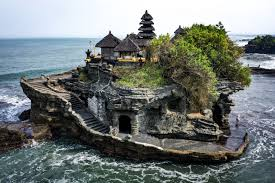

Laporan Kunjungan Industri ke Tanah Lot, Bali
Pendahuluan
Tanah Lot adalah salah satu objek wisata paling terkenal di Bali, Indonesia, yang menarik jutaan wisatawan setiap tahunnya. Terletak di pantai barat Bali, Tanah Lot dikenal dengan pura yang berada di atas batu karang yang dikelilingi oleh laut. Pura ini merupakan tempat pemujaan Dewa Laut dalam kepercayaan masyarakat Hindu Bali. Laporan ini bertujuan untuk mengeksplorasi daya tarik Tanah Lot serta potensi kunjungan di masa depan, dengan mengamati aspek budaya, ekonomi, dan lingkungan.
Daya Tarik Tanah Lot
Beberapa daya tarik utama Tanah Lot meliputi:
- Keindahan Alam: Pemandangan matahari terbenam yang spektakuler membuat Tanah Lot menjadi salah satu lokasi terbaik untuk menikmati sunset. Laut yang biru dan ombak yang menghantam batu karang menambah pesona alamnya.
- Budaya dan Spiritual: Pura Tanah Lot adalah salah satu dari tujuh pura yang terletak di tepi laut, yang sangat penting dalam kepercayaan Hindu. Upacara keagamaan sering diadakan di sini, memberikan pengalaman spiritual bagi pengunjung.
- Aktivitas Wisata: Selain berkeliling pura, pengunjung dapat menikmati pasar seni yang menawarkan berbagai kerajinan lokal, serta pertunjukan tari tradisional Bali, seperti Tari Kecak yang sering dipentaskan saat matahari terbenam.
- Aksesibilitas: Tanah Lot dapat diakses dengan mudah dari berbagai daerah wisata lain di Bali, membuatnya menjadi tujuan yang populer di kalangan wisatawan domestik dan internasional.
Analisis Pengunjung
Tanah Lot menerima sekitar 5 juta pengunjung setiap tahunnya. Pada akhir pekan dan saat liburan, jumlah pengunjung dapat meningkat secara signifikan. Berikut adalah analisis berdasarkan pengamatan selama kunjungan:
- Kebangkitan Kunjungan: Dengan peningkatan aksesibilitas dan promosi, jumlah pengunjung cenderung meningkat setiap tahunnya.
- Demografi Pengunjung: Mayoritas pengunjung adalah wisatawan internasional, terutama dari Australia, Jepang, dan Eropa, tetapi tidak sedikit juga wisatawan domestik yang datang.
- Pengeluaran Pengunjung: Rata-rata pengunjung menghabiskan sekitar Rp 200.000 - Rp 500.000 per kunjungan untuk tiket masuk, makanan, dan belanja di pasar seni.
Potensi Kunjungan di Masa Depan
Dengan meningkatnya ketertarikan terhadap wisata budaya dan alam, Tanah Lot memiliki potensi besar untuk menarik lebih banyak pengunjung. Berikut adalah beberapa faktor yang dapat meningkatkan potensi kunjungan:
- Promosi Wisata: Kampanye pemasaran yang agresif melalui media sosial dan kolaborasi dengan influencer pariwisata dapat menarik perhatian lebih banyak wisatawan.
- Pengembangan Fasilitas: Meningkatkan fasilitas umum, seperti tempat parkir, toilet, dan area istirahat, untuk kenyamanan pengunjung.
- Inovasi Program Wisata: Mengembangkan program wisata edukatif tentang budaya dan lingkungan, serta acara tahunan untuk menarik lebih banyak pengunjung.
- Kebijakan Berkelanjutan: Menjaga keberlanjutan lingkungan dengan kebijakan yang mendukung konservasi alam dan budaya.
Kesimpulan
Tanah Lot memiliki daya tarik yang kuat sebagai destinasi wisata dengan potensi kunjungan di masa depan yang sangat baik. Dengan pengelolaan yang tepat, promosi yang efektif, dan fokus pada keberlanjutan, Tanah Lot dapat terus menjadi tujuan wisata yang menarik dan bermanfaat bagi masyarakat lokal.
Saran
Berdasarkan observasi selama kunjungan, berikut adalah beberapa saran untuk meningkatkan daya tarik dan jumlah pengunjung Tanah Lot:
- Meningkatkan promosi melalui media sosial, termasuk konten visual yang menarik dan kolaborasi dengan influencer.
- Mengadakan event budaya dan festival tahunan yang melibatkan masyarakat lokal untuk menarik lebih banyak pengunjung.
- Menerapkan kebijakan pengelolaan lingkungan yang ketat, seperti pengurangan sampah plastik dan pelestarian habitat lokal.
- Memberikan pelatihan kepada pemandu wisata lokal agar dapat memberikan pengalaman yang lebih mendalam kepada pengunjung.